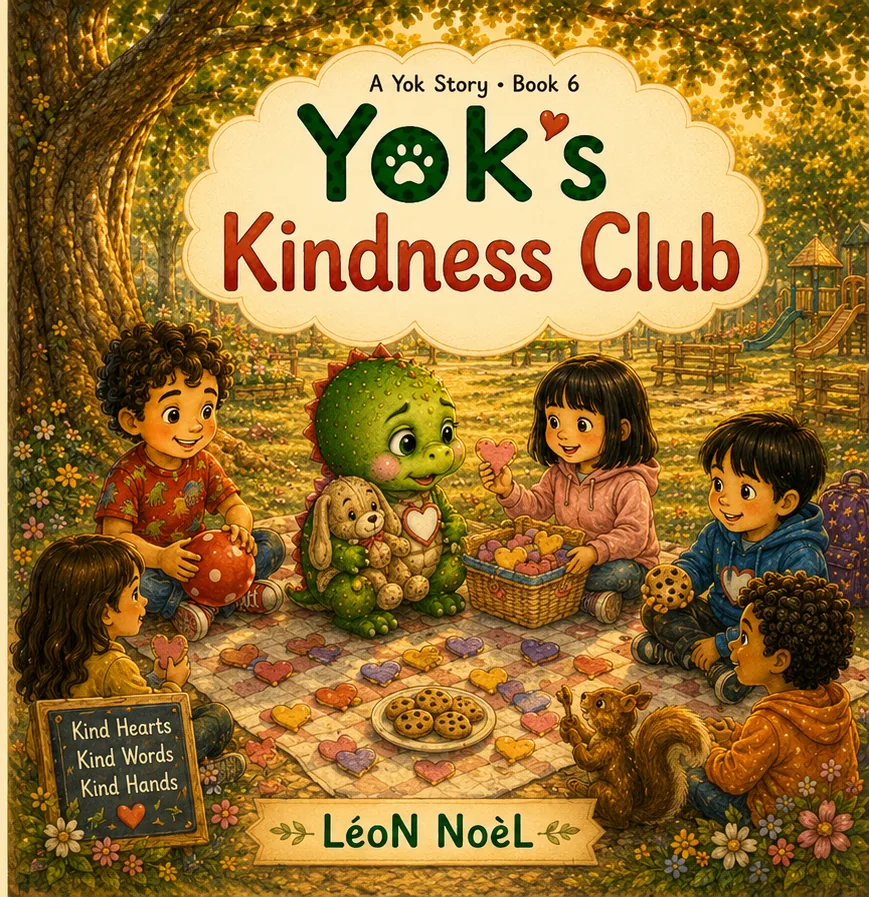
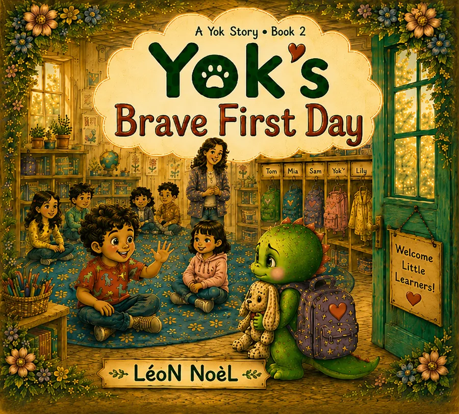
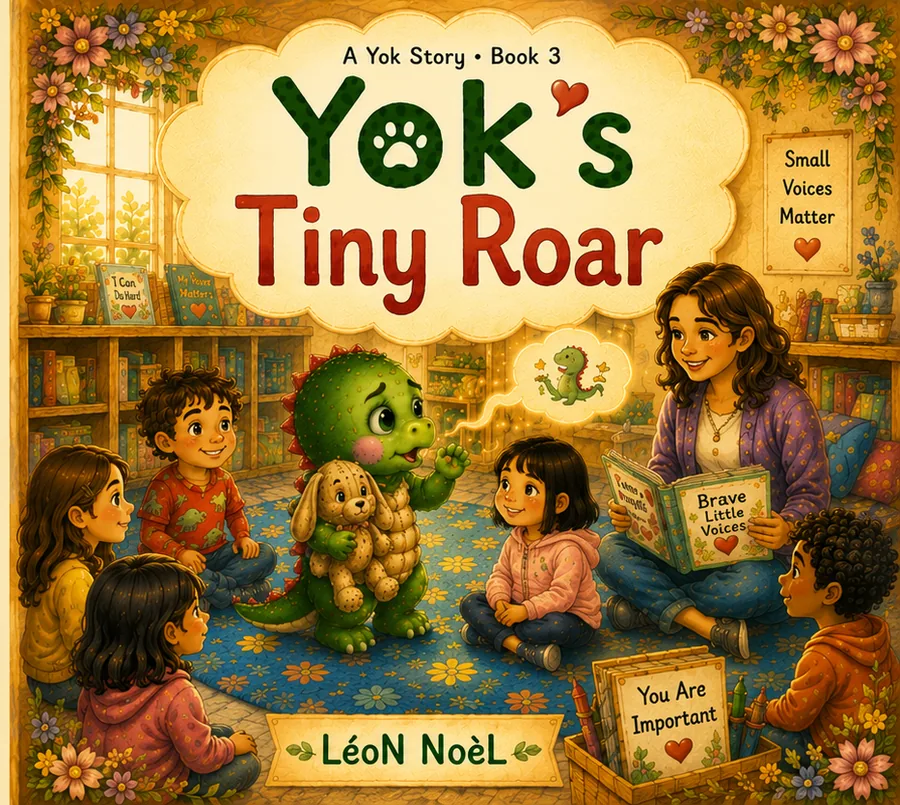
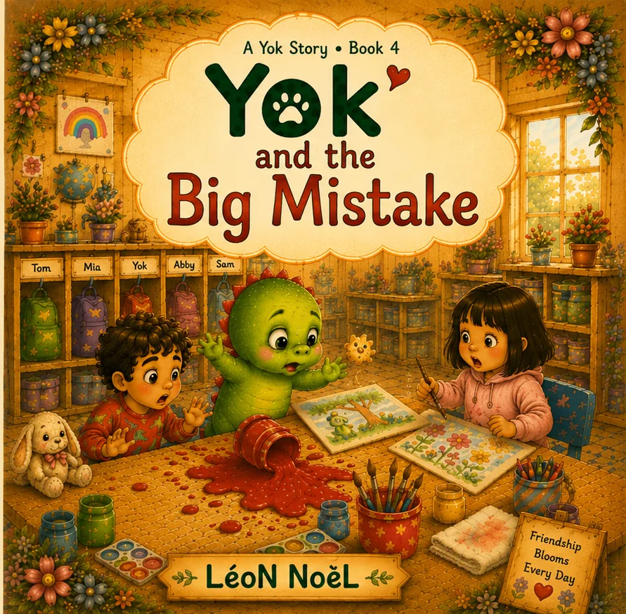
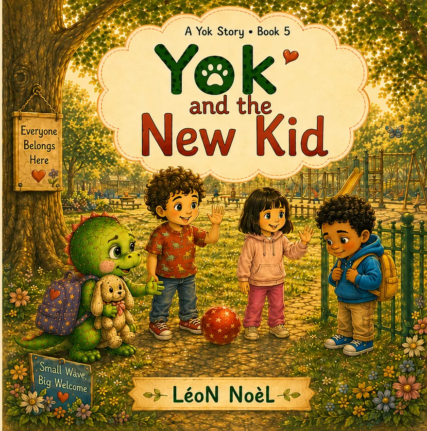
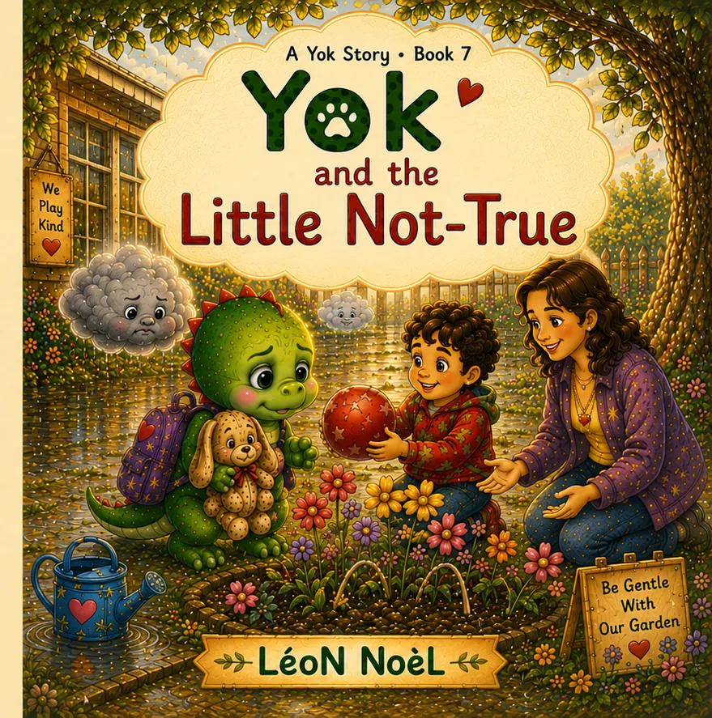
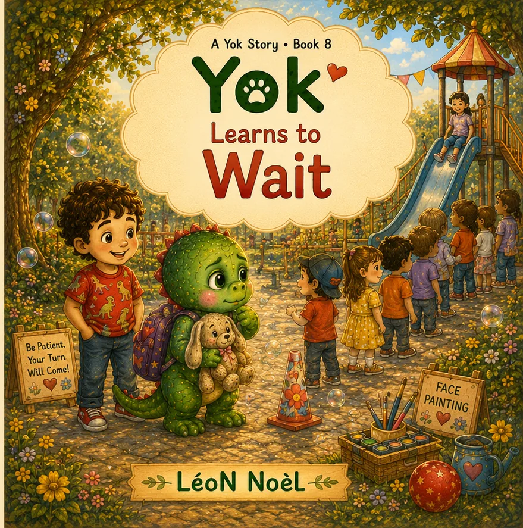
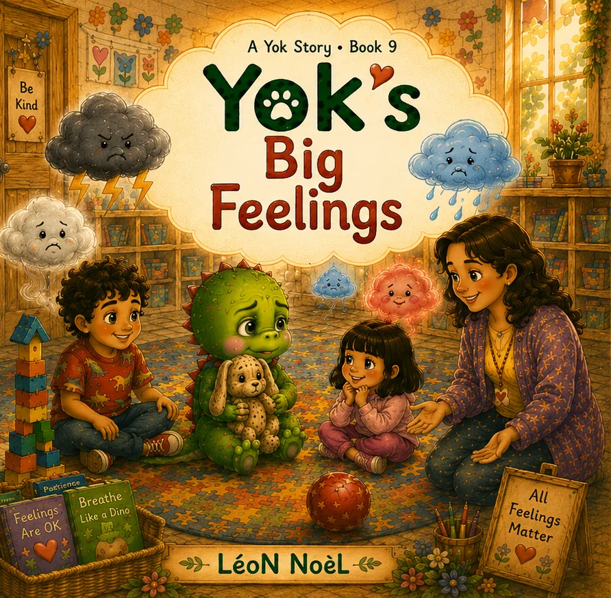

01
01A Yok Story · Ages 3–6
Little skills for big moments.
Ten warm picture books about friendship, courage, mistakes, welcome, honesty, patience, feelings, and trying again—one gentle skill at a time.

The complete collection
Choose your next story.
01
02
03
04
0506

07
08
09 10
10